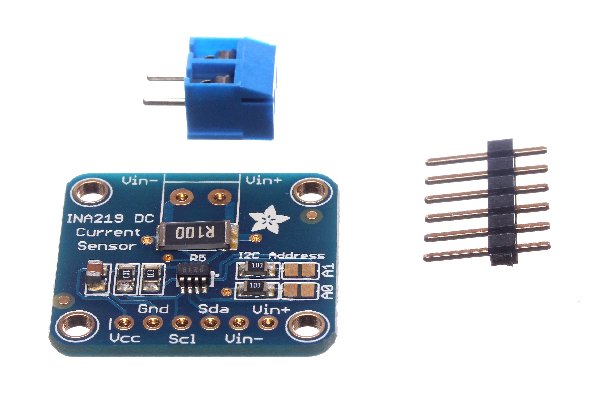

graph LR
A["Sensores"] --> B["ESP32/ESP8266"]
B --> C["Atuadores"]
B --> D["WiFi / LoRa"]
D --> E["Internet / MQTT"]
style A fill:#50fa7b,color:#282a36
style B fill:#8be9fd,color:#282a36
style C fill:#ff79c6,color:#282a36
style D fill:#f1fa8c,color:#282a36
style E fill:#bd93f9,color:#282a36
Revisao: Aula Passada
Componentes que voce ja conhece
LDR + DHT22 (Revisao)

LDR - Luz ambiente
Entrada analogica - A0

DHT22 - Temp + Umidade
Digital 1-Wire - GPIO
LCD I2C + Rele (Revisao)

Rele 5V - 1 Canal
Controle ON/OFF - digitalWrite
- LCD I2C: display 16x2
- Endereco I2C: 0x27
- Biblioteca: LiquidCrystal_I2C
Motor DC + MOSFET (Revisao)

MOSFET IRFZ44N
Driver de potencia N-channel
- Motor DC: controle PWM
- MOSFET como chave eletronica
- Velocidade via analogWrite
Por que tantos sensores?
"O que e POSSIVEL medir e controlar?"
Etapa 1: Sensores Simples
Evoluindo do familiar: DS18B20, boia e fluxo
DS18B20 - Temperatura de Precisao

- Precisao: ±0.5°C
- Faixa: -55 a +125°C
- Comunicacao: 1-Wire
- Versao a prova d'agua
Boia e Sensor de Fluxo
Sensor de Nivel (Boia)
- Sinal digital: HIGH/LOW
- Contato seco (reed switch)
- Uso: caixa d'agua, tanque
Sensor de Vazao (YF-S201)
- Mede volume de liquido
- Pulsos por litro (ex: 450)
- Uso: irrigacao, consumo
Etapa 2: Sensores de Distancia
Ultrassonico, Laser e Radar
HC-SR04 - Ultrassonico

- Alcance: 2cm a 4m
- Precisao: ±3mm
- Angulo: ~15 graus
- Preco: ~R$ 10
VL53L0X - Laser Time-of-Flight

Fonte: makerguides.com
- Alcance: ate 2m
- Precisao: ±1mm
- Comunicacao: I2C
- Feixe IR invisivel
Ultrassonico vs Laser
| Caracteristica | HC-SR04 | VL53L0X |
|---|---|---|
| Alcance | 2cm - 4m | 3cm - 2m |
| Precisao | ±3mm | ±1mm |
| Angulo | ~15 graus | ~25 graus |
| Comunicacao | Trigger/Echo | I2C |
| Preco | ~R$ 10 | ~R$ 25 |
| Obstaculos | Sofre com superficies macias | Funciona em qualquer superficie |
RCWL-0516 - Radar Doppler

Fonte: Random Nerd Tutorials
- Micro-ondas 3.18 GHz
- Alcance: ate 7m
- Atravessa paredes finas
- Sinal digital HIGH/LOW
Etapa 3: Sensores Ambientais
Gas, solo, chuva, movimento, campo magnetico
MQ-2 - Sensor de Gas e Fumaca

Fonte: Random Nerd Tutorials
- Detecta: GLP, metano, alcool, fumaca
- Saida: analogica + digital
- Ajuste de sensibilidade (potenciometro)
- Familia MQ: MQ-3 alcool, MQ-7 CO, MQ-135 qualidade ar
Umidade do Solo + Sensor de Chuva

Umidade do Solo
Resistivo - saida analogica

Sensor de Chuva FC-37
Fonte: Random Nerd Tutorials
Acelerometro + Sensor Hall

MPU-6050
Acelerometro + Giroscopio

Sensor Hall
Detecta campo magnetico
PIR HC-SR501 - Sensor de Presenca

- Detecta calor (infravermelho)
- Alcance: 3 a 7m
- Angulo: 120 graus
- Ajuste: tempo e sensibilidade
- Sinal digital: HIGH = movimento
PIR vs Radar Doppler: PIR detecta calor, Radar detecta movimento (atravessa objetos)
Sensores de Corrente e Tensao

INA219
Corrente + Tensao via I2C

TMP36
Temperatura analogica
- INA219: monitoramento de bateria e consumo energetico
- Divisor de tensao: metodo simples com 2 resistores
Etapa 4: Atuadores
Servo, Motor de Passo, Solenoide e muito mais
Servo Motor SG90

- Angulo: 0 a 180 graus
- Torque: 1.2 kg.cm (4.8V)
- Controle: PWM (50Hz)
- Biblioteca: Servo.h
Motor de Passo 28BYJ-48

- Passos: 2048 por volta (com driver)
- Driver: ULN2003
- Tensao: 5V
- Uso: posicao precisa, CNC
Solenoide e Outros Atuadores

Valvula Solenoide
Controle de fluxo de liquido/gas

Fita LED WS2812B
LEDs RGB enderecaveis
- Solenoide: usa MOSFET/transistor como driver (alta corrente)
- WS2812B: biblioteca FastLED - controle individual de cada LED
- Outros: buzzer ativo/passivo, display 7 segmentos, modulo RFID
Etapa 5: Comunicacao IoT
LoRa, Infravermelho e MQTT
LoRa - Longo Alcance

Fonte: Random Nerd Tutorials
- Alcance: varios km (visada)
- Baixo consumo de energia
- Baixa largura de banda
- Frequencias: 433/868/915 MHz
- Chip: SX1276/SX1278
Infravermelho e MQTT
IR (Infravermelho)
- Receptor: TSOP1838, VS1838B
- Emissor: LED IR 940nm
- Biblioteca: IRremote
- Uso: controle remoto, TV
MQTT
- Protocolo leve para IoT
- Modelo: publish/subscribe
- Broker: Mosquitto, HiveMQ
- Biblioteca: PubSubClient
Resumo: Guia de Selecao
| Grandeza | Sensor | Interface | Precisao | Preco |
|---|---|---|---|---|
| Temperatura | DHT22 | 1-Wire | ±0.5°C | ~R$15 |
| Temperatura | DS18B20 | 1-Wire | ±0.5°C | ~R$10 |
| Distancia | HC-SR04 | Trigger/Echo | ±3mm | ~R$10 |
| Distancia | VL53L0X | I2C | ±1mm | ~R$25 |
| Movimento | PIR | Digital | - | ~R$12 |
| Movimento | RCWL-0516 | Digital | - | ~R$15 |
| Gas | MQ-2 | Analogico | - | ~R$12 |
| Umidade solo | YL-69 | Analogico | - | ~R$8 |
| Nivel agua | Boia | Digital | - | ~R$8 |
| Aceleracao | MPU-6050 | I2C | 6 eixos | ~R$20 |
| Corrente | INA219 | I2C | ±0.5% | ~R$15 |
Exercicio Pratico
Projeto: Sistema de Monitoramento Inteligente
Em grupo, escolham:
Justifique cada escolha considerando:
- Faixa de medicao/atuacao
- Precisao requerida
- Consumo de energia
- Custo
Resumo da Aula
Proxima aula: Escolha do Projeto Final
Duvidas?
graph TB
A["Voce conhece os sensores"] --> B["Escolhe o projeto"]
B --> C["2 meses para desenvolver"]
C --> D["Mostra para o mundo!"]
style A fill:#50fa7b,color:#282a36
style B fill:#8be9fd,color:#282a36
style C fill:#f1fa8c,color:#282a36
style D fill:#ff79c6,color:#282a36
"O ceu e o limite quando voce conhece as ferramentas certas!"